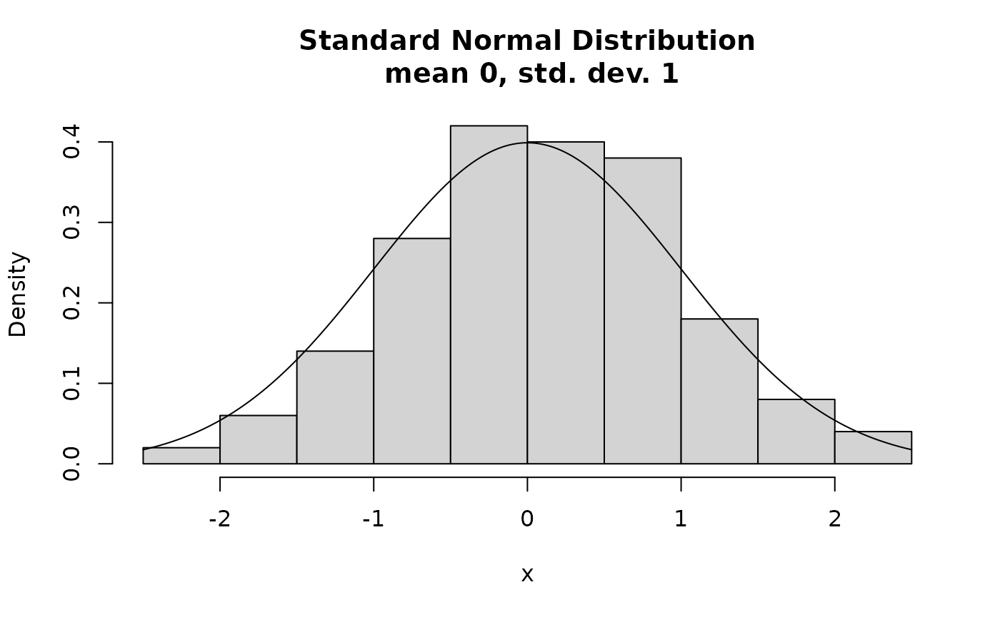
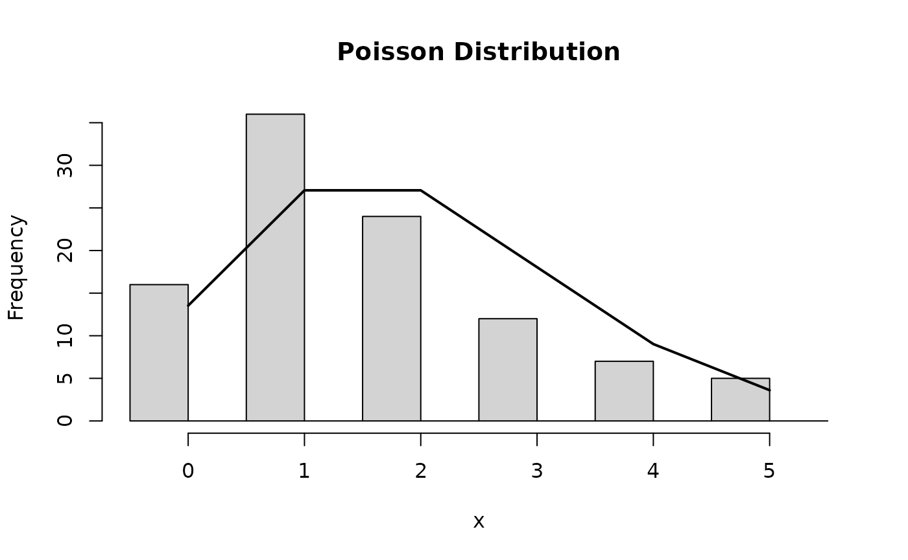

Applied Statistics for High-throughput Biology: Session 1
day1_intro.RmdFront matter
Welcome
My research interests:
- High-dimensional statistics (more variables than observations)
- Predictive modeling and methodology for validation
- Metagenomic profiling of the human microbiome
- Multi-omic data analysis for cancer
- https://www.waldronlab.io
The textbooks
- Biomedical Data Science by Irizarry and Love (ePub version on Leanpub)
- Source repository
- Modern Statistics for Modern Biology by Holmes and Huber (secondary)
- Orchestrating Single-Cell Analysis with Bioconductor (OSCA) by Amezquita, Lun, Hicks, Gottardo, O’Callaghan

Biomedical Data Science book cover
Day 1 outline
- Random variables and distributions
- Hypothesis testing for one or two samples (t-test, Wilcoxon test, etc)
- Confidence intervals
- Essential data classes in R/Bioconductor
- Book chapters 0 and 1
Random Variables and Distributions
Random Variables
A random variable: any characteristic that can be measured or categorized, and where any particular outcome is determined at least partially by chance.
-
Examples:
- number of new diabetes cases in population in a given year
- The weight of a randomly selected individual in a population
-
Types:
- Categorical random variable (e.g. disease / healthy)
- Discrete random variable (e.g. sequence read counts)
- Continuous random variable (e.g. normalized qPCR intensity)
Random Variables - examples
Normally distributed random variable with mean \(\mu = 0\) / standard deviation \(\sigma = 1\), and a sample of \(n=100\)

Random Variables - examples
Poisson distributed random variable (\(\lambda = 2\)), and a sample of \(n=100\).

Hypothesis Testing
Why hypothesis testing?
- Allows yes/no statements, e.g. whether:
- a population mean has a hypothesized value, or
- an intervention causes a measurable effect relative to a control group
- Example questions with yes/no answers:
- Is a gene differentially expressed between two populations?
- Do hypertensive, smoking men have the same mean cholesterol level as the general population?
- Hypothesis testing is not the only framework for inferential
statistics, e.g.:
- confidence intervals
- posterior probabilities (Bayesian statistics)
- read p-values are just the tip of the iceberg
Logic of hypothesis testing
- Hypotheses are made about populations based on inference from samples
- We make inference from samples because we usually cannot observe the entire population
Sample vs Population
Source: https://keydifferences.com/wp-content/uploads/2016/06/population-vs-sample2.jpg
{kind=link}
One and two-sample hypothesis tests of mean
One-sample hypothesis test of mean - sample comes from one of two population distributions:
- usual distribution that has been true in the past
- \(H_0: \mu = \mu_0\) (null hypothesis)
- a potentially new distribution induced by an intervention or
changing condition
- \(H_A: \mu \neq \mu_0\) (alternative hypothesis)
Two-sample hypothesis test of means - two samples are drawn, either:
- from a single population
- \(H_0: \mu_1 = \mu_2\) (null hypothesis)
- from two different populations
- \(H_A: \mu_1 \neq \mu_2\) (alternative hypothesis)
Population vs sampling distributions
- Population distributions
- Each realization / point is an individual
- Sampling distributions
- Each realization / point is a sample
- distribution depends on sample size
- large sample distributions are given by the Central Limit Theorem
-
Hypothesis testing is about sampling distributions
- Did my sample likely come from that distribution?
Note about the Central Limit Theorem
When sample size is large, the average \(\bar{Y}\) of a random sample:
- Follows a normal distribution
- The normal distribution has mean entered at the population average \(\mu_Y\)
- with standard deviation equal to the population standard deviation \(\sigma_Y\), divided by the square root of the sample size \(N\). We refer to the standard deviation of the distribution of a random variable as the random variable’s standard error.
Thanks to CLT, linear modeling, t-tests, ANOVA are all guaranteed to work reasonably well for large samples (more than ~30 observations).
Go to online demo: http://onlinestatbook.com/stat_sim/sampling_dist/
Example applications of hypothesis tests for continuous variables
- Do study participants on a diet lose weight compared to a control group?
- Does a gene knockout result in less viable cell colonies, as measured by the number of living cells in replicate experiments?
- Is Prevotella copri more abundant in the guts of vegans than of meat-eaters?
- Do infants born in this region have a higher birthweight than the national average?
These are research hypotheses. What are the corresponding null hypotheses?
The z-tests
- “\(z\)” refers to the Standard Normal Distribution: \(N(\mu=0, \sigma=1)\)
- In a one-sample test, only a single sample is drawn:
- \(H_0: \mu = \mu_0\)
- In a two-sample test, two samples are drawn independently:
- \(H_0: \mu_1 = \mu_2\)
- A paired test is one sample of paired measurements, e.g.:
- pain level in individuals before and after treatment
- \(H_0: \mu_{before} = \mu_{after}\)
- microbial abundance in upper and lower intestines in same
individuals
- \(H_0: \mu_{upper} = \mu_{lower}\)
- pain level in individuals before and after treatment
When to use z-tests
-
\(\frac{{}\bar{x} - \mu}{\sigma}\)
and \(\frac{\bar{x_1} -
\bar{x_2}}{\sigma}\) are z-distributed if:
- the standard deviation \(\sigma\) for the population is known in advance
- the population values are normally distributed
- the population values are slightly skewed but n > 15
- the population values are quite skewed but n > 30
Example of one-sample z-test
library(TeachingDemos)
set.seed(1)
(weights = rnorm(10, mean = 75, sd = 10))
#> [1] 68.73546 76.83643 66.64371 90.95281 78.29508 66.79532 79.87429 82.38325
#> [9] 80.75781 71.94612
TeachingDemos::z.test(
x = weights,
mu = 70, #specified for population under H0 because this is a one-sample test
stdev = 10, #specified for population because this is a z-test
alternative = "two.sided"
)
#>
#> One Sample z-test
#>
#> data: weights
#> z = 1.9992, n = 10.0000, Std. Dev. = 10.0000, Std. Dev. of the sample
#> mean = 3.1623, p-value = 0.04559
#> alternative hypothesis: true mean is not equal to 70
#> 95 percent confidence interval:
#> 70.12408 82.51998
#> sample estimates:
#> mean of weights
#> 76.32203The t-tests
- The t-tests are for small samples and do not rely on the Central Limit Theorem
- In a one-sample test, only a single sample is drawn:
- \(H_0: \mu = \mu_0\)
- In a two-sample test, two samples are drawn independently:
- \(H_0: \mu_1 = \mu_2\)
- A paired test is one sample of paired measurements, e.g.:
- individuals before and after treatment
When to use t-tests
-
\(\frac{{}\bar{x} - \mu}{s}\) and
\(\frac{\bar{x_1} - \bar{x_2}}{s}\) are
t-distributed if:
- the standard deviation \(s\) is estimated from the sample
- the population values are normally distributed
- the population values are slightly skewed but n > 15
- the population values are quite skewed but n > 30
- Wilcoxon tests are an alternative for non-normal populations
- e.g. rank data
- data where ranks are more informative than means
- not when many ranks are arbitrary
Example of one-sample t-test
Note that here we do not specify the standard deviation, because it is estimated from the sample.
stats::t.test(
x = weights,
mu = 70, #specified for population under H0 because this is a one-sample test
alternative = "two.sided"
)
#>
#> One Sample t-test
#>
#> data: weights
#> t = 2.5612, df = 9, p-value = 0.03063
#> alternative hypothesis: true mean is not equal to 70
#> 95 percent confidence interval:
#> 70.73805 81.90600
#> sample estimates:
#> mean of x
#> 76.32203In this particular example the p-value is smaller than from the z-test, but in general it would be less powerful than a z-test if its assumptions are met.
Confidence intervals
Why confidence intervals?
- The above procedures produced both p-values and confidence intervals
- p-values are useful only for deciding whether to reject \(H_0\)
- p-values do not report effect size (observed difference).
- p-values only indicate statistical significance which does not guarantee scientific/clinical significance.
Confidence intervals provide a probable range for the true population mean.
Intervals for any confidence level
- If the sampling distribution is normal with standard error \(SE\), then a confidence interval for the
population mean is:
- \(\bar{X} \pm 1.96 \times SE\) (95% CI, normal sampling distribution)
- \(\bar{X} \pm z_{\alpha / 2}^{crit} \times SE\) (normal sampling distribution)
- \(\bar{X} \pm t_{\alpha / 2, df}^{crit} \times SE\) (t sampling distribution)
- The part after the \(\pm\) is called the margin of error
Confidence intervals vs. hypothesis testing
- Confidence intervals can be used for hypothesis testing
- reject \(H_0\) if the “null value” is not contained in the CI
- Do not use overlap between two CIs for hypothesis
test
- for a two sample hypothesis test \(H_0: \mu_1 = \mu_2\), must construct a single confidence interval for \(\mu_1 - \mu_2\)
Summary - hypothesis testing
Power and type I and II error
| True state of nature | Result of test | |
|---|---|---|
| Reject \(H_0\) | Fail to reject \(H_0\) | |
| \(H_0\) TRUE | Type I error, probability = \(\alpha\) | No error, probability = \(1-\alpha\) |
| \(H_0\) FALSE | No error, probability is called power = \(1-\beta\) | Type II error, probability = \(\beta\) (false negative) |
Use and mis-use of the p-value
- The p-value is the probability of observing a sample statistic as or more extreme as you did, assuming that \(H_0\) is true
- The p-value is a random variable:
- don’t treat it as precise.
- don’t do silly things like try to interpret differences or ratios between p-values
- don’t lose track of test assumptions such as independence of observations
- do use a moderate p-value cutoff, then use some effect size measure for ranking
- Small p-values are particularly:
- variable under repeated sampling, and
- sensitive to test assumptions
Use and mis-use of the p-value (cont’d)
- If we fail to reject \(H_0\), is
the probability that \(H_0\) is true
equal to (\(1-\alpha\))? (Hint: NO NO
NO!)
- Failing to reject \(H_0\) does not mean \(H_0\) is true
- “No evidence of difference \(\neq\) evidence of no difference”
- Statistical significance vs. practical significance
- As sample size increases, point estimates such as the mean are more precise
- With large sample size, small differences in means may be statistically significant but not practically significant
- Although \(\alpha = 0.05\) is a common cut-off for the p-value, there is no set border between “significant” and “insignificant,” only increasingly strong evidence against \(H_0\) (in favor of \(H_A\)) as the p-value gets smaller.
R - basic usage
Tips for learning R
| Pseudo code | Example code |
|---|---|
| library(packagename) | library(dplyr) |
| ?functionname | ?select |
| ?package::functionname | ?dplyr::select |
| ? ‘Reserved keyword or symbol’ | ? ‘%>%’ |
| ??searchforpossiblyexistingfunctionandortopic | ??simulate |
| help(package = “loadedpackage”) | help(“dplyr”) |
| browseVignettes(“packagename”) | browseVignettes(“dplyr”) |
Slide credit: Marcel Ramos
Installing Packages the Bioconductor Way
- See the Bioconductor site for more info
Pseudo code:
install.packages("BiocManager") #from CRAN
packages <- c("packagename", "githubuser/repository", "biopackage")
BiocManager::install(packages)
BiocManager::valid() #check validity of installed packages- Works for CRAN, GitHub, and Bioconductor packages!
Introduction to the R/Bioconductor data classes
Base R Data Types: atomic vectors
numeric (set seed to sync random number generator):
integer:
sample(1L:5L)
#> [1] 3 5 1 4 2logical:
1:3 %in% 3
#> [1] FALSE FALSE TRUEcharacter:
c("yes", "no")
#> [1] "yes" "no"factor:
For real-life recoding of factors, try dplyr::recode,
dplyr::recode_factor
Base R Data Types: missingness
- Missing Values and others - IMPORTANT
c(NA, NaN, -Inf, Inf)
#> [1] NA NaN -Inf Infclass() to find the class of a variable.
Base R Data Types: matrix, list, data.frame
matrix:
matrix(1:9, nrow = 3)
#> [,1] [,2] [,3]
#> [1,] 1 4 7
#> [2,] 2 5 8
#> [3,] 3 6 9The list is a non-atomic vector:
measurements <- c(1.3, 1.6, 3.2, 9.8, 10.2)
parents <- c("Parent1.name", "Parent2.name")
my.list <- list(measurements, parents)
my.list
#> [[1]]
#> [1] 1.3 1.6 3.2 9.8 10.2
#>
#> [[2]]
#> [1] "Parent1.name" "Parent2.name"The data.frame has list-like and matrix-like
properties:
x <- 11:16
y <- seq(0, 1, .2)
z <- c("one", "two", "three", "four", "five", "six")
a <- factor(z)
my.df <- data.frame(x, y, z, a, stringsAsFactors = FALSE)Bioconductor S4 vectors: DataFrame
- Bioconductor (www.bioconductor.org) defines its own set of vectors
using the S4 formal class system
DqtqFrame: like adata.framebut more flexible. columns can be any atomic vector type:-
GenomicRangesobjects -
Rle(run-length encoding)
-
DataFrame is actually a virtual classes
- Rationale: Methods defined on
DFrameare shared by all classes inheriting it - See: https://bioconductor.org/help/course-materials/2019/BiocDevelForum/02-DataFrame.pdf
- See also: https://github.com/Bioconductor/S4Vectors/issues/90#issue-1026425148
List and derived classes
List(my.list)
#> List of length 2
str(List(my.list))
#> Formal class 'SimpleList' [package "S4Vectors"] with 4 slots
#> ..@ listData :List of 2
#> .. ..$ : num [1:5] 1.3 1.6 3.2 9.8 10.2
#> .. ..$ : chr [1:2] "Parent1.name" "Parent2.name"
#> ..@ elementType : chr "ANY"
#> ..@ elementMetadata: NULL
#> ..@ metadata : list()
suppressPackageStartupMessages(library(IRanges))
IntegerList(var1 = 1:26, var2 = 1:100)
#> IntegerList of length 2
#> [["var1"]] 1 2 3 4 5 6 7 8 9 10 11 12 13 14 15 16 17 18 19 20 21 22 23 24 25 26
#> [["var2"]] 1 2 3 4 5 6 7 8 9 10 11 12 ... 89 90 91 92 93 94 95 96 97 98 99 100
CharacterList(var1 = letters[1:100], var2 = LETTERS[1:26])
#> CharacterList of length 2
#> [["var1"]] a b c d e f g h i j ... <NA> <NA> <NA> <NA> <NA> <NA> <NA> <NA> <NA>
#> [["var2"]] A B C D E F G H I J K L M N O P Q R S T U V W X Y Z
LogicalList(var1 = 1:100 %in% 5, var2 = 1:100 %% 2)
#> LogicalList of length 2
#> [["var1"]] FALSE FALSE FALSE FALSE TRUE FALSE ... FALSE FALSE FALSE FALSE FALSE
#> [["var2"]] TRUE FALSE TRUE FALSE TRUE FALSE ... FALSE TRUE FALSE TRUE FALSEBiostrings
suppressPackageStartupMessages(library(Biostrings))
bstring <- BString("I am a BString object")
bstring
#> 21-letter BString object
#> seq: I am a BString object
dnastring <- DNAString("TTGAAA-CTC-N")
dnastring
#> 12-letter DNAString object
#> seq: TTGAAA-CTC-N
str(dnastring)
#> Formal class 'DNAString' [package "Biostrings"] with 5 slots
#> ..@ shared :Formal class 'SharedRaw' [package "XVector"] with 2 slots
#> .. .. ..@ xp :<externalptr>
#> .. .. ..@ .link_to_cached_object:<environment: 0x5584e9cf1480>
#> ..@ offset : int 0
#> ..@ length : int 12
#> ..@ elementMetadata: NULL
#> ..@ metadata : list()
alphabetFrequency(dnastring, baseOnly=TRUE, as.prob=TRUE)
#> A C G T other
#> 0.25000000 0.16666667 0.08333333 0.25000000 0.25000000(Ranged)SummarizedExperiment
 * Source: https://bioconductor.org/packages/SummarizedExperiment/
* Source: https://bioconductor.org/packages/SummarizedExperiment/
(Ranged)SummarizedExperiment
-
RangedSummarizedExperimentis the de facto standard for “rectangular” data with metadata - Extended by
SingleCellExperiment,DESeqDataSet - Emulated by
MultiAssayExperiment